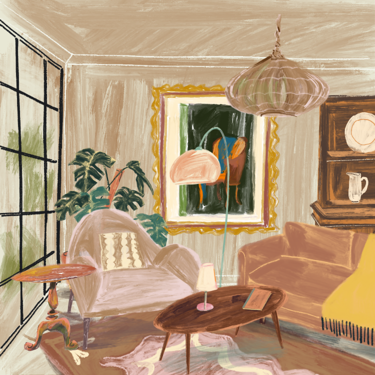
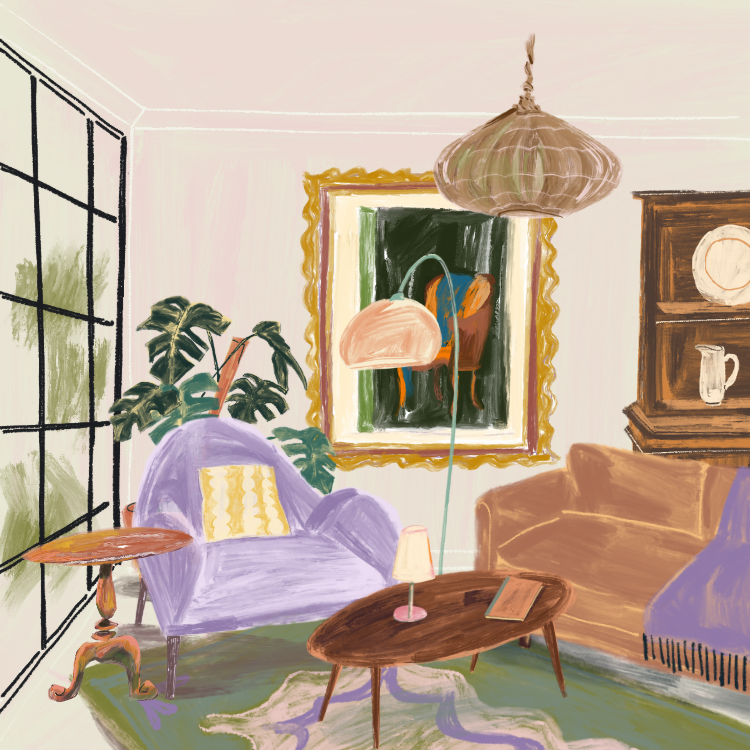

Choosing the Right Color Palette
Step 1: Begin With Yourself
The most natural place to start when choosing a color palette is with yourself. Designer Laurie H. Smith once said, “A woman's home should always be in colors that make her look and feel beautiful.” It's a thought worth holding onto.
The colors that flatter you — the ones you're drawn to in clothing, art, or everyday objects — often translate seamlessly into interiors. These shades feel familiar, effortless, and deeply personal. When a color resonates with you, it brings a quiet sense of comfort into a space.
Step 2: Stay Within the Same Range
Once a core palette emerges, build gently within it. Work with variations of the same hue: lighter and darker tones, softened neutrals, and subtle shifts in intensity.
This approach creates depth without visual noise. Rooms feel layered and cohesive, allowing textures, materials, and light to do the rest of the work.
Step 3: Introduce Thoughtful Contrast
A considered palette benefits from contrast. Opposing tones — whether warm against cool, light against dark, or soft against structured — add balance and interest.
These elements don't need to dominate. A dark wood detail, a black accent, or a cool stone surface can anchor a softer scheme and give the space a sense of intention and quiet confidence.

